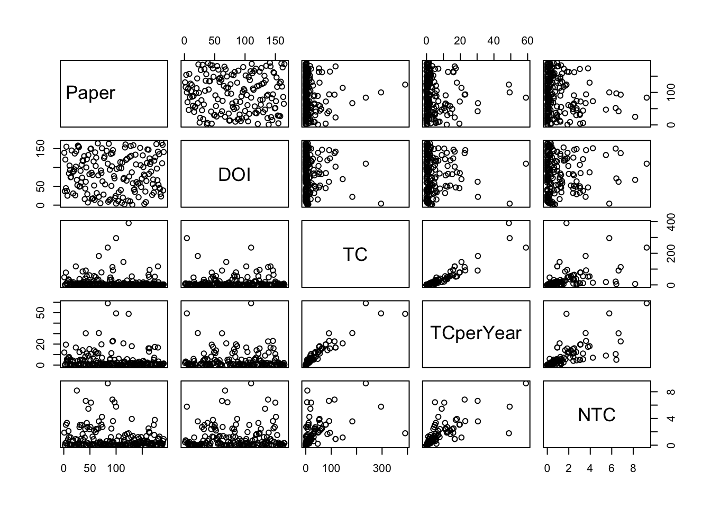

Converting your isi collection into a bibliographic dataframe
Done!
Generating affiliation field tag AU_UN from C1: Done!Blockchain and sustainability reporting
Sample analysis
Results from this link
Clarivate Analytics WoS
Summarize main results of the bibliometric analysis
Countries collaborating on this set of bibliographic data
main bibliometric measures
summarize main results of the bibliometric analysis
MAIN INFORMATION ABOUT DATA
Timespan 2016 : 2023
Sources (Journals, Books, etc) 154
Documents 191
Annual Growth Rate % 23.97
Document Average Age 2.52
Average citations per doc 19.05
Average citations per year per doc 4.625
References 8106
DOCUMENT TYPES
article 96
article; early access 13
editorial material 4
meeting abstract 1
news item 1
proceedings paper 57
review 17
review; early access 2
DOCUMENT CONTENTS
Keywords Plus (ID) 250
Author's Keywords (DE) 613
AUTHORS
Authors 656
Author Appearances 729
Authors of single-authored docs 12
AUTHORS COLLABORATION
Single-authored docs 12
Documents per Author 0.291
Co-Authors per Doc 3.82
International co-authorships % 30.37
Annual Scientific Production
Year Articles
2016 2
2017 3
2018 14
2019 26
2020 40
2021 35
2022 47
2023 9
Annual Percentage Growth Rate 23.97
Most Productive Authors
Authors Articles Authors Articles Fractionalized
1 JAYARAMAN R 5 ALDUGHAYFIQ B 1.50
2 SALAH K 5 SAMPALLI S 1.50
3 GUPTA S 4 MACKEY TK 1.25
4 LIU X 4 UDDIN M 1.25
5 ALDUGHAYFIQ B 3 LI J 1.20
6 BALI V 3 LIU X 1.08
7 CASINO F 3 ACHARYA S 1.00
8 DEBE M 3 ANITHA P 1.00
9 KHANNA T 3 BADR NG 1.00
10 MACKEY TK 3 CHUNG HM 1.00
Top manuscripts per citations
Paper
1 METTLER M, 2016, 2016 IEEE 18TH INTERNATIONAL CONFERENCE ON E-HEALTH NETWORKING, APPLICATIONS AND SERVICES (HEALTHCOM)
2 KIM HM, 2018, INTELL SYST ACCOUNT FINANC MANAG
3 HASTIG GM, 2020, PROD OPER MANAG
4 FAN K, 2018, J MED SYST
5 MACKEY TK, 2017, EXPERT OPIN DRUG SAF
6 WU H, 2017, INFORMATION
7 ANJUM A, 2017, IEEE CLOUD COMPUT
8 JAMIL F, 2019, ELECTRONICS
9 SYLIM P, 2018, JMIR RES PROTOC
10 JAMIL F, 2020, SENSORS
DOI TC TCperYear NTC
1 NA 391 48.9 1.785
2 10.1002/isaf.1424 296 49.3 5.772
3 10.1111/poms.13147 236 59.0 9.255
4 10.1007/s10916-018-0993-7 183 30.5 3.568
5 10.1080/14740338.2017.1313227 145 20.7 1.148
6 10.3390/info8040137 117 16.7 0.926
7 10.1109/MCC.2017.3791019 117 16.7 0.926
8 10.3390/electronics8050505 113 22.6 6.833
9 10.2196/10163 95 15.8 1.852
10 10.3390/s20082195 92 23.0 3.608
Corresponding Author's Countries
Country Articles Freq SCP MCP MCP_Ratio
1 INDIA 28 0.1481 23 5 0.179
2 USA 27 0.1429 20 7 0.259
3 CHINA 24 0.1270 21 3 0.125
4 UNITED KINGDOM 12 0.0635 6 6 0.500
5 CANADA 8 0.0423 5 3 0.375
6 KOREA 8 0.0423 5 3 0.375
7 U ARAB EMIRATES 7 0.0370 2 5 0.714
8 AUSTRALIA 6 0.0317 4 2 0.333
9 ITALY 6 0.0317 3 3 0.500
10 IRAN 4 0.0212 3 1 0.250
SCP: Single Country Publications
MCP: Multiple Country Publications
Total Citations per Country
Country Total Citations Average Article Citations
1 USA 614 22.74
2 SWITZERLAND 469 156.33
3 UNITED KINGDOM 447 37.25
4 CANADA 394 49.25
5 CHINA 359 14.96
6 KOREA 300 37.50
7 INDIA 150 5.36
8 GREECE 145 48.33
9 MALTA 140 70.00
10 U ARAB EMIRATES 92 13.14
Most Relevant Sources
Sources Articles
1 IEEE ACCESS 10
2 ELECTRONICS 5
3 SENSORS 4
4 COMPUTERS IN BIOLOGY AND MEDICINE 3
5 JMIR MEDICAL INFORMATICS 3
6 SUSTAINABILITY 3
7 2019 10TH INTERNATIONAL CONFERENCE ON COMPUTING COMMUNICATION AND NETWORKING TECHNOLOGIES (ICCCNT) 2
8 ADVANCED DRUG DELIVERY REVIEWS 2
9 DRUG DISCOVERY TODAY 2
10 EXPERT OPINION ON DRUG SAFETY 2
Most Relevant Keywords
Author Keywords (DE) Articles Keywords-Plus (ID) Articles
1 BLOCKCHAIN 129 CHALLENGES 20
2 HEALTHCARE 25 MANAGEMENT 19
3 SUPPLY CHAIN 23 TECHNOLOGY 14
4 PHARMACEUTICAL SUPPLY CHAIN 17 BLOCKCHAIN 12
5 SECURITY 16 SYSTEM 12
6 SMART CONTRACTS 15 FRAMEWORK 11
7 ETHEREUM 12 INTERNET 11
8 BLOCKCHAIN TECHNOLOGY 10 HEALTH 10
9 IOT 10 DESIGN 8
10 SMART CONTRACT 10 IMPACT 8$MainInformation
[1] "\n\nMAIN INFORMATION ABOUT DATA\n\n" "Timespan 2016 : 2023 \n"
[3] "Sources (Journals, Books, etc) 154 \n" "Documents 191 \n"
[5] "Annual Growth Rate % 23.97 \n" "Document Average Age 2.52 \n"
[7] "Average citations per doc 19.05 \n" "Average citations per year per doc 4.625 \n"
[9] "References 8106 \n" "\nDOCUMENT TYPES \n"
[11] "article 96 \n" "article; early access 13 \n"
[13] "editorial material 4 \n" "meeting abstract 1 \n"
[15] "news item 1 \n" "proceedings paper 57 \n"
[17] "review 17 \n" "review; early access 2 \n"
[19] "\nDOCUMENT CONTENTS\n" "Keywords Plus (ID) 250 \n"
[21] "Author's Keywords (DE) 613 \n" "\nAUTHORS\n"
[23] "Authors 656 \n" "Author Appearances 729 \n"
[25] "Authors of single-authored docs 12 \n" "\nAUTHORS COLLABORATION\n"
[27] "Single-authored docs 12 \n" "Documents per Author 0.291 \n"
[29] "Co-Authors per Doc 3.82 \n" "International co-authorships % 30.37 \n"
[31] "\n"
$MainInformationDF
Description Results
1 MAIN INFORMATION ABOUT DATA
2 Timespan 2016:2023
3 Sources (Journals, Books, etc) 154
4 Documents 191
5 Annual Growth Rate % 23.97
6 Document Average Age 2.52
7 Average citations per doc 19.05
8 Average citations per year per doc 4.625
9 References 8106
10 DOCUMENT TYPES
11 article 96
12 article; early access 13
13 editorial material 4
14 meeting abstract 1
15 news item 1
16 proceedings paper 57
17 review 17
18 review; early access 2
19 DOCUMENT CONTENTS
20 Keywords Plus (ID) 250
21 Author's Keywords (DE) 613
22 AUTHORS
23 Authors 656
24 Author Appearances 729
25 Authors of single-authored docs 12
26 AUTHORS COLLABORATION
27 Single-authored docs 12
28 Documents per Author 0.291
29 Co-Authors per Doc 3.82
30 International co-authorships % 30.37
31
$AnnualProduction
Year Articles
1 2016 2
2 2017 3
3 2018 14
4 2019 26
5 2020 40
6 2021 35
7 2022 47
8 2023 9
$AnnualGrowthRate
[1] 23.97
$MostProdAuthors
Authors Articles Authors Articles Fractionalized
1 JAYARAMAN R 5 ALDUGHAYFIQ B 1.50
2 SALAH K 5 SAMPALLI S 1.50
3 GUPTA S 4 MACKEY TK 1.25
4 LIU X 4 UDDIN M 1.25
5 ALDUGHAYFIQ B 3 LI J 1.20
6 BALI V 3 LIU X 1.08
7 CASINO F 3 ACHARYA S 1.00
8 DEBE M 3 ANITHA P 1.00
9 KHANNA T 3 BADR NG 1.00
10 MACKEY TK 3 CHUNG HM 1.00
$MostCitedPapers
Paper
1 METTLER M, 2016, 2016 IEEE 18TH INTERNATIONAL CONFERENCE ON E-HEALTH NETWORKING, APPLICATIONS AND SERVICES (HEALTHCOM)
2 KIM HM, 2018, INTELL SYST ACCOUNT FINANC MANAG
3 HASTIG GM, 2020, PROD OPER MANAG
4 FAN K, 2018, J MED SYST
5 MACKEY TK, 2017, EXPERT OPIN DRUG SAF
6 WU H, 2017, INFORMATION
7 ANJUM A, 2017, IEEE CLOUD COMPUT
8 JAMIL F, 2019, ELECTRONICS
9 SYLIM P, 2018, JMIR RES PROTOC
10 JAMIL F, 2020, SENSORS
DOI TC TCperYear NTC
1 NA 391 48.9 1.785
2 10.1002/isaf.1424 296 49.3 5.772
3 10.1111/poms.13147 236 59.0 9.255
4 10.1007/s10916-018-0993-7 183 30.5 3.568
5 10.1080/14740338.2017.1313227 145 20.7 1.148
6 10.3390/info8040137 117 16.7 0.926
7 10.1109/MCC.2017.3791019 117 16.7 0.926
8 10.3390/electronics8050505 113 22.6 6.833
9 10.2196/10163 95 15.8 1.852
10 10.3390/s20082195 92 23.0 3.608
$MostProdCountries
Country Articles Freq SCP MCP MCP_Ratio
1 INDIA 28 0.1481 23 5 0.179
2 USA 27 0.1429 20 7 0.259
3 CHINA 24 0.1270 21 3 0.125
4 UNITED KINGDOM 12 0.0635 6 6 0.500
5 CANADA 8 0.0423 5 3 0.375
6 KOREA 8 0.0423 5 3 0.375
7 U ARAB EMIRATES 7 0.0370 2 5 0.714
8 AUSTRALIA 6 0.0317 4 2 0.333
9 ITALY 6 0.0317 3 3 0.500
10 IRAN 4 0.0212 3 1 0.250
$TCperCountries
Country Total Citations Average Article Citations
1 USA 614 22.74
2 SWITZERLAND 469 156.33
3 UNITED KINGDOM 447 37.25
4 CANADA 394 49.25
5 CHINA 359 14.96
6 KOREA 300 37.50
7 INDIA 150 5.36
8 GREECE 145 48.33
9 MALTA 140 70.00
10 U ARAB EMIRATES 92 13.14
$MostRelSources
Sources Articles
1 IEEE ACCESS 10
2 ELECTRONICS 5
3 SENSORS 4
4 COMPUTERS IN BIOLOGY AND MEDICINE 3
5 JMIR MEDICAL INFORMATICS 3
6 SUSTAINABILITY 3
7 2019 10TH INTERNATIONAL CONFERENCE ON COMPUTING COMMUNICATION AND NETWORKING TECHNOLOGIES (ICCCNT) 2
8 ADVANCED DRUG DELIVERY REVIEWS 2
9 DRUG DISCOVERY TODAY 2
10 EXPERT OPINION ON DRUG SAFETY 2
$MostRelKeywords
Author Keywords (DE) Articles Keywords-Plus (ID) Articles
1 BLOCKCHAIN 129 CHALLENGES 20
2 HEALTHCARE 25 MANAGEMENT 19
3 SUPPLY CHAIN 23 TECHNOLOGY 14
4 PHARMACEUTICAL SUPPLY CHAIN 17 BLOCKCHAIN 12
5 SECURITY 16 SYSTEM 12
6 SMART CONTRACTS 15 FRAMEWORK 11
7 ETHEREUM 12 INTERNET 11
8 BLOCKCHAIN TECHNOLOGY 10 HEALTH 10
9 IOT 10 DESIGN 8
10 SMART CONTRACT 10 IMPACT 8
NULLmost frequent cited manuscripts
[,1]
BOCEK THOMAS, 2017, 2017 IFIP/IEEE SYMPOSIUM ON INTEGRATED NETWORK AND SERVICE MANAGEMENT (IM), P772, DOI 10.23919/INM.2017.7987376 28
AZARIA A, 2016, PROCEEDINGS 2016 2ND INTERNATIONAL CONFERENCE ON OPEN AND BIG DATA - OBD 2016, P25, DOI 10.1109/OBD.2016.11 22
JAMIL F, 2019, ELECTRONICS-SWITZ, V8, DOI 10.3390/ELECTRONICS8050505 22
SYLIM P, 2018, JMIR RES PROTOC, V7, DOI 10.2196/10163 22
TSENG JH, 2018, INT J ENV RES PUB HE, V15, DOI 10.3390/IJERPH15061055 16
KUO TT, 2017, J AM MED INFORM ASSN, V24, P1211, DOI 10.1093/JAMIA/OCX068 15
MACKEY TK, 2017, EXPERT OPIN DRUG SAF, V16, P587, DOI 10.1080/14740338.2017.1313227 14
METTLER M, 2016, 2016 IEEE 18TH INTERNATIONAL CONFERENCE ON E-HEALTH NETWORKING, APPLICATIONS AND SERVICES (HEALTHCOM), P520 14
XIA Q, 2017, IEEE ACCESS, V5, P14757, DOI 10.1109/ACCESS.2017.2730843 14
KSHETRI N, 2018, INT J INFORM MANAGE, V39, P80, DOI 10.1016/J.IJINFOMGT.2017.12.005 13most frequent cited first authors
[,1]
NAKAMOTO S 53
MACKEY TK 51
JAMIL F 33
BOCEK THOMAS 28
ZHANG P 27
AZARIA A 26
ZHENG ZB 26
WORLD HEALTH ORGANIZATION 25
KUMAR A 24most frequent local cited authors
Author LocalCitations
196 FONTELO P 22
343 LIU F 22
365 MARCELO A 22
560 SYLIM P 22
276 JAYARAMAN R 20
507 SALAH K 20
155 DEBE M 14
356 MACKEY TK 14
416 NAYYAR G 14
603 WANG S 13most frequent local cited papers
Paper DOI Year LCS GCS
17 SYLIM P, 2018, JMIR RES PROTOC 10.2196/10163 2018 22 95
5 MACKEY TK, 2017, EXPERT OPIN DRUG SAF 10.1080/14740338.2017.1313227 2017 14 145
14 FAN K, 2018, J MED SYST 10.1007/s10916-018-0993-7 2018 12 183
103 MUSAMIH A, 2021, IEEE ACCESS 10.1109/ACCESS.2021.3049920 2021 12 54
65 HASTIG GM, 2020, PROD OPER MANAG 10.1111/poms.13147 2020 10 236
89 BAMAKAN SMH, 2021, J CLEAN PROD 10.1016/j.jclepro.2021.127021 2021 9 37
60 DWIVEDI SK, 2020, J INF SECUR APPL 10.1016/j.jisa.2020.102554 2020 8 56
8 BOULOS MNK, 2018, INT J HEALTH GEOGR 10.1186/s12942-018-0144-x 2018 6 85
85 SAXENA N, 2020, COMPUTER 10.1109/MC.2020.2989238 2020 6 16
87 UDDIN M, 2021, HEALTH INFORM J 10.1177/14604582211011228 2021 6 21Authors’ Dominance ranking
Author Dominance Factor Tot Articles Single-Authored Multi-Authored First-Authored Rank by Articles
1 ALDUGHAYFIQ B 1.0000000 3 0 3 3 2
2 ANITHA P 1.0000000 2 0 2 2 9
3 BAMAKAN SMH 1.0000000 2 0 2 2 9
4 BALI V 0.6666667 3 0 3 2 2
5 CASINO F 0.6666667 3 0 3 2 2
6 MACKEY TK 0.6666667 3 0 3 2 2
7 DEBE M 0.3333333 3 0 3 1 2
8 KHANNA T 0.3333333 3 0 3 1 2
9 ZHANG C 0.3333333 3 0 3 1 2
10 LIU X 0.2500000 4 0 4 1 1
Rank by DF
1 1
2 1
3 1
4 4
5 4
6 4
7 7
8 7
9 7
10 10H index for ALOFI A
Bornmann’s impact indices
[1] Element h_index g_index m_index TC NP PY_start
<0 rows> (or 0-length row.names)Citation list
named list()Top-Authors’ Productivity over the Time
Element h_index g_index m_index TC NP PY_start
1 ALDUGHAYFIQ B 2 3 0.3333333 18 3 2018
2 BALI V 1 1 0.3333333 3 3 2021
3 CASINO F 3 3 0.6000000 152 3 2019
4 DEBE M 3 3 0.7500000 66 3 2020
5 GUPTA S 2 2 0.6666667 6 4 2021
6 JAYARAMAN R 3 5 0.7500000 87 5 2020
7 KHANNA T 1 1 0.3333333 3 3 2021
8 LIU X 1 2 0.1666667 6 4 2018
9 MACKEY TK 2 3 0.2857143 158 3 2017
10 SALAH K 3 5 0.7500000 87 5 2020Top local authors and Author’s productivity per year
Author year freq TC TCpY
1 ALDUGHAYFIQ B 2018 1 2 0.3333333
2 ALDUGHAYFIQ B 2021 1 16 5.3333333
3 ALDUGHAYFIQ B 2022 1 0 0.0000000
4 BALI V 2021 1 3 1.0000000
5 BALI V 2022 2 0 0.0000000
6 CASINO F 2019 1 40 8.0000000Conceptual structure map of a scientific field (based on Author’s keywords)